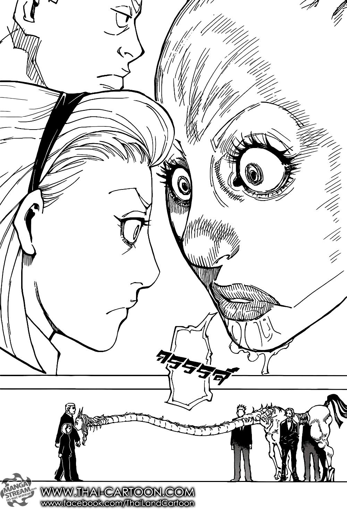

Parallel Future
The Fourth Prince closes his eyes in the middle of a fight and lives the next ten seconds twice. You have already lost the argument you are about to make. He remembers it.

Parallel Future
Field notes. Subject: the Fourth Prince of Kakin, who closes his eyes in the middle of a fight. Three truths govern him. First: the vision is lived, not seen. Ten seconds, rehearsed at full speed, eyes shut, quiet as Zetsu and blind as stone — the most guarded man on the Black Whale makes himself a target, because he has already watched the arrow miss. Second: the price is the point. While his eyes are closed he is blind and defenseless; strike him then, if you can stand knowing he has already decided you won't. Third: the second chapter is the correction. What he lived, he rewrites. The future he returns with is the one he chose. Fourth: and when he no longer needs to close his eyes, he opens a room instead — and the room has rules.
Feature map
Level-by-level features
Parallel Future: First Chapter
Action · 2 CE · Close your eyes until the start of your next turn. While closed you are blinded and attack rolls against you have advantage. When you open them, the GM honestly reveals the intended actions and targets of creatures you perceived, for their next turn. Gain 1 Foresight (pool maximum = PB).
The first chapter is always a rehearsal. He closes his eyes in front of armed men and smiles, because he has already watched them fail.
Lived It Already
Spend 1 Foresight · When you or a creature within 60 ft makes an attack roll, ability check, or saving throw: force a reroll and choose which result stands.
You already lived the version where it went the other way. Choose the better memory.
Domain Expansion: Parallel Future
Ten seconds, then ten seconds again, then the room. The barrier closes and every eye inside it opens onto the same vision — the prince has already lived this round, and he is simply letting it happen around him. The air tastes of rehearsal. Nothing here is spontaneous. Nothing here is unwitnessed.
Full-turn action · 20 CE · 120-ft radius · Duration 2 minutes · Clash 800 points (Tier IV) · Technique Burnout: 5 rounds
1. Rule of Closed Eyes (the price). For the Domain's duration the user's eyes are closed — blinded to everything outside the Domain, but they perceive everything inside it through the vision. The sight is replaced, not removed.
2. Rule of the Parallel (First Chapter). At the start of each round inside the Domain, the user lives it first as vision — the GM honestly reveals every creature's intended actions inside the Domain for that round.
3. Rule of the Second Chapter (the sure-hit). Once per round, the user may rewrite one witnessed event — declare the outcome of one d20 roll inside the Domain. No roll, no save. It is a rule of the Domain, like Judgeman's verdict.
4. Rule of the Witnessed Future. Nothing inside the Domain hides from the user — invisibility, the Hide action, and surprise fail against them. You cannot hide from what has already been witnessed.
The Future Is Fixed
3 Foresight · Once per turn · When you force a reroll, declare the replacement d20 result instead of rolling.
Probability was a suggestion. The prince declines suggestions.
Guardian Spirit Beast
Passive · Parasitic Nen beast · Invisible to you · Marks liars within 60 ft: each further lie deepens the wound (+2d8 necrotic, +1d8 per lie beyond the first).
A horse's body, a woman's head, stiletto hooves, hands for forelegs — and inside the mouth, a second face, waiting. It is parasitic: it drinks his aura to sustain itself, and it cannot be dismissed. He can never see it. Hosts never see their own beasts. It sees him anyway, and it watches everyone near him for the one thing he hates more than boredom: a lie.
When a creature within 60 feet of the user speaks a deliberate lie the user can hear, the beast marks them — no save; the beast decides, and its judgment is the mechanic. The mark is invisible except to those who perceive cursed energy and lasts 1 hour. Each further deliberate lie told while marked deepens the wound immediately: 2d8 necrotic on the second lie, +1d8 for every lie after that. The beast's neck extends and it phases through objects; cover does not protect a liar.
A second, smaller beast has been glimpsed at his side. Its purpose is unknown. This dossier does not speculate.
Ten Seconds Ahead
Passive · Glimpse reveals two rounds of intentions. Foresight maximum becomes PB + 2. You cannot be surprised.
Two rounds is a lifetime. He reads your next move and the apology after it.
Parallel Steps
Passive · When you Glimpse, first move up to your speed without provoking opportunity attacks.
He saw the safe path. He walks it with his eyes closed.
The Vision Rewrites
1/long rest · When you or an ally within 60 ft drops to 0 hit points or fails a saving throw: rewind to the start of the current round. Positions, hit points, and resources reset. Only you (and one ally you choose) remember what happened.
Death is a first draft. The prince edits.
Second Chapter, Perfected
Passive · The Domain's Rewrite (Rule of the Second Chapter) becomes twice per round. Domain CE cost reduced by 5. 5 Foresight: when your Domain ends, rewrite the ending — suffer no Technique Burnout.
The prince stops rationing his corrections. The room learns to accommodate him. And when the barrier falls, he spends the last of his foresight the way he spends everything else: he has already lived the version where the burnout took him, so he simply chooses the version where it didn't.
Parallel Future: Final Chapter
Passive · Start each combat with full Foresight. Glimpse costs 1 CE and no longer blinds you. Once per round, regain 1 Foresight when you force a reroll.
The final chapter has no price. Ten seconds, lived twice, and the second time is the only one that counts.
Four feats, rehearsed.
Parallel Future teaches four feats, four ways to spend a vision you already lived. Each is optional, and you must meet its listed prerequisite before taking it.
Theta's Lesson
Theta taught him what Zetsu costs, and he learned it the hard way. Train the vulnerability out of the stance: attack rolls against you no longer have advantage while your eyes are closed. You are still blinded — the price is reduced, never refunded.
The Fourth Prince's Requiem
He shares the vision the way he shares everything: downward. When you Glimpse, one ally within 60 feet also learns the intentions you were shown.
Kakin Negotiator
Boardrooms are battlefields with better chairs. Outside combat, spend 1 minute in Glimpse while conversing with a creature: the GM reveals one honest hidden motive or bottom line of that creature.
Murder in the Second Chapter
2 Foresight · Once per turn: when you hit with an attack, turn it into a critical hit. He rehearsed the killing blow.
Edge cases and shared systems.
Campaign canon notes